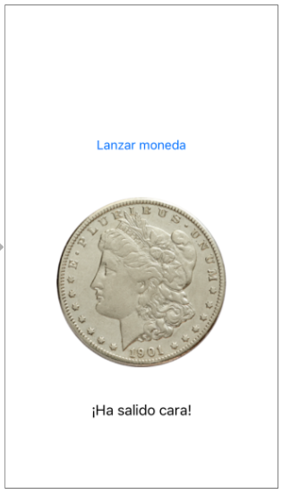

Ejercicios de introducción a las aplicaciones iOS (2 puntos)¶
Desarrolla una app llamada iMoneda con la que se pueda "lanzar" una "moneda virtual" a ver si sale cara o cruz.
La interfaz de la app será muy sencilla y constará de:
- Un
Buttonque al ser pulsado "lanzará" la moneda. - Un
UIImageViewpara mostrar la imagen de la cara o de la cruz - Un
Labelpara mostrar el resultado en modo texto ("cara" o "cruz")

- La vista (0,5 puntos): Crea la interfaz arrastrando los componentes y colocándolos donde creas conveniente.
- Añádele al proyecto las imágenes de la cara y cruz de la moneda. Crea un image set en la carpeta
Assets.xcassetsllamado cara y otro llamado cruz y deja allí las imágenes correspondientes. Verás que están a @2x y @3x. - El modelo(0,5 puntos): Crea:
- Un enumerado
Tiradacon los valores decaraycruz - Una clase
Monedacon un único métodolanzar()que devuelva unaTiradaal azar
- Un enumerado
- El controlador (0,75 punto):
- Define en él una propiedad del tipo
Moneda - Crea dos outlet, uno para acceder al componente
UIImageViewy otro para elLabel - Crea un action que vincule el botón con algún método del
ViewController - En el código del action:
- Usa el método
lanzar()de laMonedapara obtener una tirada - Muestra el resultado en modo texto en el
Label, ("cara", "cruz") - Muestra la imagen apropiada
- Usa el método
- Define en él una propiedad del tipo
Aclaración: Cómo trabajar con imágenes
Las imágenes se representan en iOS con objetos
UIImage. Podemos obtener la imagen correspondiente a un recurso de los assets con su nombre:
let imagenCara = UIImage(named:"cara")
El
UIImageViewes un componente de interfaz que contiene unaUIImage. Podemos cambiar la imagen asignándola a la propiedadimagedelUIImageView.
let imagenCara = UIImage(named:"cara")
//SUPONIENDO que el outlet que representa al UIImageView es imageView
self.imageView.image = imagenCara
(0,25 puntos) Finalmente añádele un icono a la app y una launch screen con los elementos que consideres.
- Puedes descargar iconos por ejemplo de icons8.com/icons
- Puedes cambiar el tamaño del icono con
Vista Previadel Mac (Herramientas>Ajustar Tamaño...) o bien puedes generar automáticamente los tamaños necesarios con la ayuda de una web como por ejemplo appicon.co